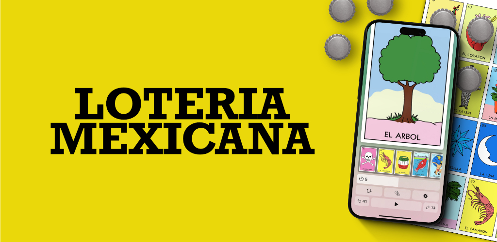

The Mexican Lotería is a traditional and popular game, especially in the northern regions of Mexico, where families often gather to play together. My mother's family is from northern Mexico, and every time we visit them, our afternoons are filled with Lotería games with my aunts and cousins. One of my cousins, who shares my passion for technology, was likely inspired by these family gatherings to start developing a Lotería app. The primary feature of the app was to announce each card, a key function that Ricardo, my cousin, focused on when he first developed the mobile app.
After some time, Ricardo joined me at Kioru, and during one of our follow-up sessions, he shared the growththe iOS apphad experienced. He expressed interest in expanding the app to Android. When he mentioned that the app hadsurpassed10,000 users, I was intrigued and offered my help to develop the app using React Native. This way, we couldhave asingle codebase for both iOS and Android.
We kicked off the project in June 2024, and by July 15th, the app was live in the stores. It was a fantastic team effort. Ricardo had a clear vision of the features we needed to develop, and when I joined the project, I added functionalities like a game board so multiple people could play on their devices, not just the card announcement feature. Although we don’t consider ourselves top-notch technicians, we were able to develop the mobile app following best practices.
Since launching the Android version, the app has seen consistent user growth, and after just one month, we’ve reached over 500 users. We aim to hit 50,000 users soon, and we’re excited to keep adding more features, as we have an ambitious roadmap ahead.
Looking ahead, we see a huge potential market in the United States, where there are over 40 million Latinos. We believe this is a significant opportunity, and our business model is very straightforward. If we can reach just 10% of this market and offer a subscription service that removes ads for just one dollar a month, it would be an incredibly profitable venture.
If you’re interested in checking out the mobile app, you can visit this website: https://www.barajamexicana.com/